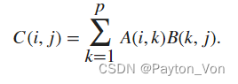
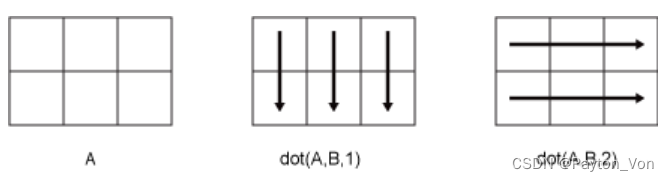
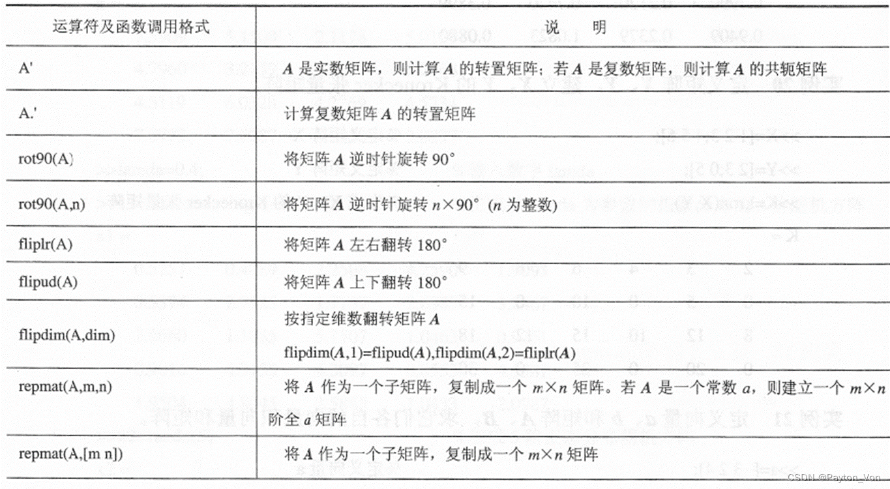
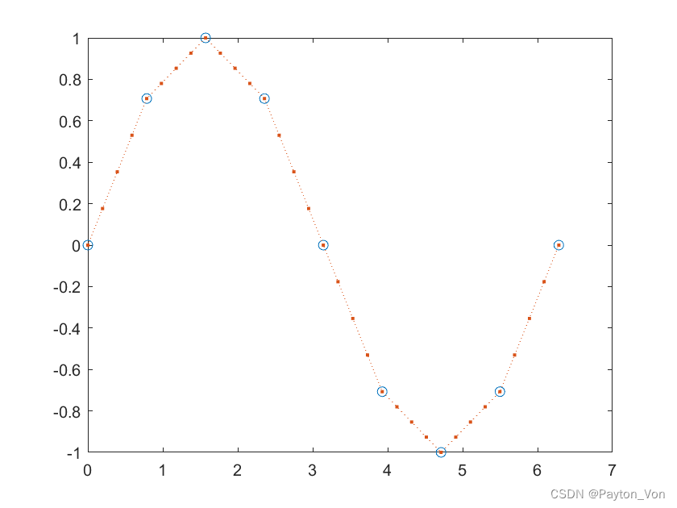
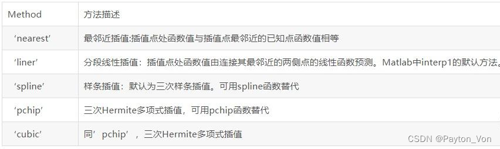
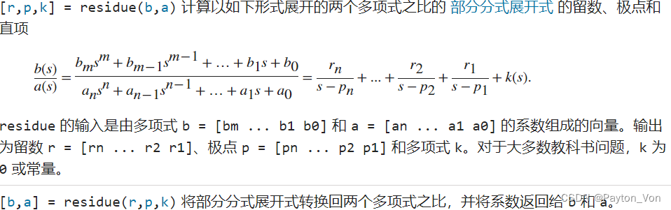
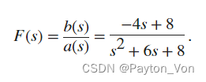

Matlab基础(三)数值计算
@TOC
一、矩阵运算
(1)矩阵的加减法
矩阵与标量的加减等于矩阵中所有元素与此标量的加减.
1 | |
(2)矩阵的乘法
①正常乘（*）
C = A*B 是 A 和 B 的矩阵乘积。如果 A 是 m×p 矩阵，B 是 p×n 矩阵，则 C 是通过以下公式定义的 m×n 矩阵：

②数乘（*）
用这个常数去乘矩阵的每一个元素
1 | |
③点乘（.*）
要求两个矩阵有相同的维数，对应元素相乘
1 | |
④标量积（dot）
返回 A 和 B 的标量点积（内积）
==语法==：
1 | |
dim：按指定维数dim求两矩阵的标量积
沿其运算的维度，指定为正整数标量。如果未指定值，则默认值是大小不等于 1 的第一个数组维度。
考虑两个二维输入数组：A 和 B：
dot(A,B,1) 将 A 和 B 的列视为向量，并返回对应列的点积。
dot(A,B,2) 将 A 和 B 的行视为向量，并返回对应行的点积。

如果 dim 大于 ndims(A)，则 dot 返回 conj(A).*B。
⑤向量积（cross）
返回 A 和 B 的叉积
cross(A,B)
cross(A,B,dim)
⑥混合积
dot(A,cross(B,C))
⑦卷积（conv）
conv(A,B)
⑧解卷积
[q,r]=deconv(B,A)
⑨张量积（kron）
kron(A,B)
(3)矩阵的除法
通过矩阵的除法可以求解线性方程组的解
①左除（ \ ）
当A、B是线性方程组AX=B中的系数矩阵和常数矩阵时，A \ B是方程组AX=B的解
②右除
当A、B是线性方程组XA=B中的系数矩阵和常数矩阵时，B \ A是方程组XA=B*的解
③元素左除
A .\ B 是指B的个元素除以A的对应元素
④元素右除
A ./ B 是指A的个元素除以B的对应元素
(4)矩阵的乘方
- 矩阵的乘法:
调用格式：A^n,n为整数，A是方阵，计算矩阵A的n次方
1 | |
若n为非整数，A为方阵
其中 lambda为A的特征对角矩阵，p为A的特征向量矩阵
-
矩阵元素的乘方
调用格式：A.^b,b可为非整数，A为方阵，计算A中每一个元素的b次方组成的矩阵。 -
数的矩阵元素的乘方
调用格式：b.^A,b为非整数，A为方阵，计算常数b的A的每一个元素次方排成的矩阵 -
数的矩阵乘方:
调用格式：b.^A,b为非整数，A为方阵其中 lambda为A的特征对角矩阵，p为A的特征向量矩阵
(5)矩阵的操作与变换

inv(A):计算非奇异矩阵的逆矩阵
det(A):计算方阵的行列式
rank(A):计算方阵的秩
trace(A):计算方阵的迹
eig(A):计算n阶方阵A的特征值
circshift(A,[m,n]):对A矩阵进行m行，n列的圆周移位
二、多项式运算
（1）多项式的系数与根
① poly2sym
由多项式的系数得到多项式的表达式
1 | |
②poly（r）
由此 MATLAB 函数（其中 r 是向量）返回多项式的系数，其中多项式的根是 r 的元素
③fzero(‘fun’,x0):
计算由函数fun=0决定的方程的根。
x0为常数时，计算x0附近的根；
如果x0为区间，计算区间内的根，若此区间无根，则输出错误信息。
求余弦函数在 1 和 2 之间的零点。
1 | |
请注意，cos(1) 和 cos(2) 的符号不同。
④roots( p )
计算多项式p(X)=0的解，结果可以为复数
（2）多项式的值
①polyval(p,x)
计算多项式 p 在 x 的每个点处的值。
②[y,delta]=polyval(p,x,s)
同①，y是多项式的值，delta是根据polyfit命令给出的矩阵s的误差估计向量
③polyvalm(p,A)
以矩阵方式返回多项式 p 的计算值，是计算：
（3）多项式的拟合与插值
①ployfit
此 MATLAB 函数 返回次数为 n 的多项式 p(x) 的系数，该阶数是 y 中数据的最佳拟合（基于最小二乘指标）。
p 中的系数按降幂排列，p 的长度为 n+1
语法：p = polyfit(x,y,n)
1 | |
输出：
1 | |
②interp1(x,y,xi,‘method’)
数据插值是通过已知的有限个数据点，推导出数据点之间未知位置上的数值。
vq = interp1(x,v,xq,method) 指定备选插值方法：'linear'、'nearest'、'next'、'previous'、'pchip'、'cubic'、'v5cubic'、'makima' 或 'spline'。默认方法为 ‘linear’。
示例:
1 | |
输出


vq = interp1(x,v,xq,method,extrapolation) 用于指定外插策略，来计算落在 x 域范围外的点。如果希望使用 method 算法进行外插，可将 extrapolation 设置为 'extrap'。您也可以指定一个标量值，这种情况下，interp1 将为所有落在 x 域范围外的点返回该标量值。
（4)多项式的运算
①conv(A,B)
计算多项式A与B的乘积，仍以向量形式输出
②[q,r]=deconv(A,B)
计算多项式A与B的商，q为多项式的系数向量，r为A、B相除后的残值多项式系数向量
③polyder(A)
计算多项式A的导数
polyder(A,B)：计算多项式A与B乘积的导数
[q,r]=polyder(A,B)：计算多项式A与B的商的导数，其中，q为导数分子多项式的系数向量，r为导数分母多项式的系数向量
④ployint(A,k)
计算多项式A的积分，参数k为积分常数，省略时积分常数为零。
1 | |
⑤residue
[r,p,k] = residue(b,a)

定义较为复杂，可在Matlab中查看示例（help residue）
- 例如：使用
residue求以下多项式之比F(s)的部分分式展开式

1 | |
输出：
1 | |

也可以使用 residue 将部分分式展开转换回多项式系数。
1 | |
此处部分分式展开的计算可以与“信号与系统”中求解单位冲激响应联系起来。
三、数理统计
1.数据的最值与排序
(1)sort(x)
B = sort(A) 按升序对 A 的元素进行排序。
- 如果 A 是向量，则 sort(A) 对向量元素进行排序。
- 如果 A 是矩阵，则 sort(A) 会将 A 的列视为向量并对每列进行排序。
- 如果 A 是多维数组，则 sort(A) 沿大小不等于 1 的第一个数组维度计算，并将这些元素视为向量。
B = sort(A,dim) 返回 A 沿维度 dim 的排序元素。
如果 A 是一个矩阵，则 sort(A,2) 对每行中的元素进行排序。
[B,I] = sort(___) 还会为上述任意语法返回一个索引向量的集合。
例如，如果 A 是一个向量，则 B = A(I)。
[C,I]=sort(A,'descend')—— 降序排列
(2)sortrows(x,col)
B = sortrows(A) 基于第一列中的元素按升序对矩阵行进行排序。当第一列包含重复的元素时，sortrows 会根据下一列中的值进行排序，并对后续的相等值重复此行为。
B = sortrows(A,column) 基于向量 column 中指定的列对 A 进行排序。例如，sortrows(A,4) 会基于第四列中的元素按升序对 A 的行进行排序。sortrows(A,[4 6]) 首先基于第四列中的元素，然后基于第六列中的元素，对 A 的行进行排序。
(3)max()
M = max(A) 返回数组的最大元素，如果元素是复数，则求最大模。
-
如果 A 是向量，则 max(A) 返回 A 的最大值。
-
如果 A 为矩阵，则 max(A) 是包含 A 的每一列的最大值的行向量。
-
如果 A 是多维数组，则 max(A) 沿大小大于 1 的 A 的第一个维度计算，并将这些元素视为向量。此维度中 M 的大小变为 1，而所有其他维度的大小仍与在 A 中相同。如果 A 是第一个维度长度为零的空数组，则 M 是与 A 大小相同的空数组。
-
如果 A 是表或时间表，则 max(A) 返回包含每个变量的最大值的一个单行表。 (自 R2023a 起)
M = max(A,[],"all") 查找 A 的所有元素的最大值。
M = max(A,[],dim) 返回维度 dim 上的最大元素。
例如，如果 A 为矩阵，则 max(A,[],2) 返回包含每一行的最大值的列向量。
[M,ind]=max(A)求矩阵A中每一列中最大值组成的行向量M，并给出最大值的行下标向量。
max(A,B)求矩阵A、B中对应元素最大值组成的矩阵
2.求和、乘积与差分
(1)sum()
S = sum(A) 返回沿大小大于 1 的第一个数组维度计算的元素之和。
-
如果 A 是向量，则 sum(A) 返回元素之和。
-
如果 A 是矩阵，则 sum(A) 将返回包含每列总和的行向量。
S = sum(A,"all")返回 A 的所有元素的总和。 -
如果 A 是多维数组，则 sum(A) 沿大小大于 1 的第一个数组维度计算，并将这些元素视为向量。此维度中 S 的大小变为 1，而所有其他维度的大小仍与在 A 中相同。
-
如果 A 是表或时间表，则 sum(A) 返回一个包含每个变量总和的单行表。 (自 R2023a 起)
(2)prod()
B = prod(A) 返回 A 的数组元素的乘积。
-
如果 A 是向量，则 prod(A) 返回元素的乘积。
-
如果 A 为非空矩阵，则 prod(A) 将 A 的各列视为向量，并返回一个包含每列乘积的行向量。
B = prod(A,"all")返回 A 的所有元素的乘积。 -
如果 A 为 0×0 空矩阵，prod(A) 返回 1。
-
如果 A 为多维数组，则 prod(A) 沿第一个非单一维度运算并返回乘积数组。此维度中 B 的大小将减少至 1，而所有其他维度的大小仍与在 A 中相同。
-
如果 A 是表或时间表，则 prod(A) 返回每个变量乘积的单行表。 (自 R2023a 起)
(3)diff()
Y = diff(X) 计算沿大小不等于 1 的第一个数组维度的 X 相邻元素之间的差分：
-
如果 X 是长度为 m 的向量，则 Y = diff(X) 返回长度为 m-1 的向量。Y 的元素是 X ==相邻元素之间的差分==。
Y = [X(2)-X(1) X(3)-X(2) ... X(m)-X(m-1)] -
如果 X 是不为空的非向量 p×m 矩阵，则 Y = diff(X) 返回大小为
(p-1)×m的矩阵，其元素是 X 的==行之间的差分==。
Y = [X(2,:)-X(1,:); X(3,:)-X(2,:); ... X(p,:)-X(p-1,:)] -
如果 X 是 0×0 的空矩阵，则 Y = diff(X) 返回 0×0 的空矩阵。
3.平均值、中值与标准差
- mean(x) —— 计算向量x元素的算数平均数
- median(x) —— 计算向量x元素的中位数
- std(x) —— 计算向量x元素的标准差
(各类用法与sum等十分相似)
4.协方差与相关系数
- cov(x) —— 计算向量 x 的协方差
- cov(x,y) —— 计算两个向量x,y的协方差
- cov(A) —— 计算矩阵A的协方差矩阵
- correoef(A) —— 计算矩阵A的相关系数矩阵
- corrcoef (x,y) —— 计算两个向量x,y的相关系数
5.数据处理
- ceil —— 向上取整
- floor —— 向下取整
- fix —— 向零取整
- round —— 四舍五入
- mod(x,y) —— 取余数
- rem(x,y)—— 取余数
(当x和y的正负号一样的时候，两个函数结果是等同的；当x和y的符号不同时，rem函数结果的符号和x的一样，而mod和y一样。) - abs(x) —— 对数据取模
- angle(x) —— 对数据取相位
- phase(x) —— 对数据取相位并解卷绕
- real(x) —— 对数据取实部
- imag(x) —— 对数据取虚部